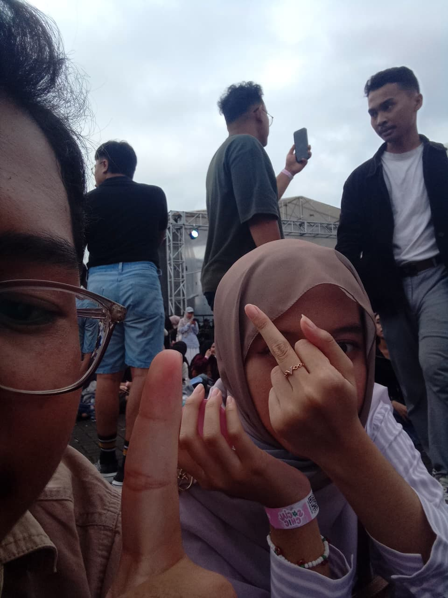

AHIRNYAA LULUS GAISS !!! jujurrr waktu ga kerasa banget, hyft kaya masih ga nyangka aja kita udah lulus kaya INI BENER GA SEKOLAH LAGI 😭😭
, dem.... udah gapiket lagi , no more mbg, galagi roling tempat duduk, galagi gabut pulsek.....
mungkin udah segitu aja, maap bikin buka web nya lama biar misterius 11.11 😈😈
(jujur sebenarnya pengen ngasih sesuatu, tp gatau apa, sma takut dikira apa 😅😊)